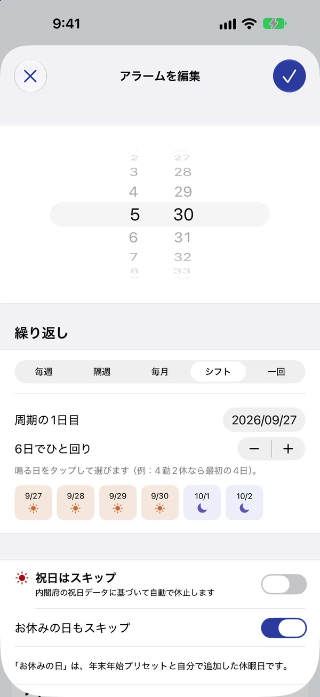
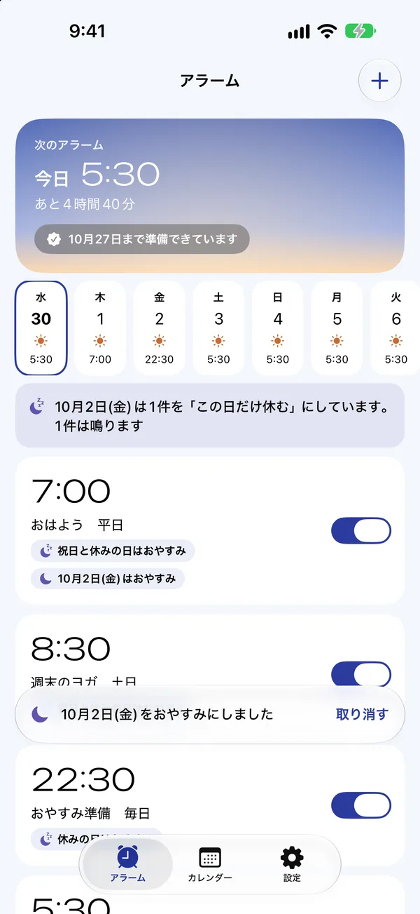

祝日の朝は、
ぐっすり。
日本の祝日も、有休も、シフトの休みも。鳴らなくていい朝は、アラームもいっしょにおやすみします。休みが明けたら、いつもの時刻にちゃんと起こします。
起きる日も、休む日も、
アラームにおまかせ。
平日のアラームを毎回オフにしたり、休み明けにオンに戻したり。そんな小さな手間を、ぜんぶ引き受けます。

太陽の日は鳴る、
月の日はおやすみ。
次に鳴る時刻と、これから14日間の予定がひと目でわかります。祝日の名前も一緒に出るので、「あれ、明日って休みだっけ？」がなくなります。
- 内閣府の祝日データで、振替休日もちゃんと判定
- 空の色は、いまの時刻に合わせて変わります

シフトも、隔週も、
第2土曜も。
毎週・隔週・毎月第◯曜日・シフト（4勤2休など、2〜28日の周期）から選べます。どの繰り返しでも、祝日と自分の休みはきちんとおやすみ。
- 保存する前に「これからの予定」で確認できます
- 有休や夏休みは、日付を選ぶだけ

今日は早く起きちゃった。
そんな日はワンタップ。
アラームを右にスワイプすると、次の1回だけおやすみ。その次からはいつもどおり鳴ります。まちがえても「取り消す」ですぐ戻せます。
- ウィジェット・コントロールセンターからも
- Siri に「祝日アラームで明日をスキップ」

休日出勤の日だけ、
鳴らすこともできます。
カレンダーで日付をタップして、アラームごとに「この日は鳴らす」「この日は休む」。祝日だけど仕事、という日もあわてません。
やさしい音で、
目がさめる。
風鈴、箏、オルゴール。このアプリのために、ひとつずつ作った音です。押すと試聴できます（音が出ます）。
アプリには全部で23種類。24秒かけて少しずつ大きくなる「だんだん大きく」も選べます。
ダウンロードは無料。
もっと使うなら、1回だけ。
サブスクリプションではありません。広告も、アカウント登録もありません。
無料
- 日本の祝日・年末年始はおやすみ
- 繰り返しアラーム2件まで
- 次の1回だけ休む
- 15種類の音、ウィジェット、Siri
プレミアム
無料の内容に加えて
- 繰り返しアラームは何件でも
- 隔週・毎月第◯曜日・シフト
- 有休など、自分の休みの登録
- 休日出勤の日だけ「この日は鳴らす」
- 2.0 の新しい音 8種類
1.x を購入してくださった方へ
ありがとうございます。有料だった頃に購入された方は、プレミアムの機能をすべて、ずっと無料で使えます。購入や復元の操作はいりません。
よくある質問
アプリを開かなくても、ずっと鳴りますか？
アラームは最大28日先まで登録し、アプリを開いたときやアラームを止めたときに先へ延ばします。長くアプリを開かなかったときは、予約が切れる3日前にお知らせします（通知を許可した場合）。重要な予定の前には、アプリの「2分後にテスト」で鳴り方を確かめておくと安心です。
有休や夏休みもおやすみにできますか？
できます。設定の「有休・自分の休みを追加」で日付や期間を選び、アラームの「お休みの日もスキップ」をオンにしてください。年末年始（12/29〜1/3）は、必要な方だけオンにできるプリセットです。
シフト勤務でも使えますか？
使えます。繰り返しで「シフト」を選び、周期の1日目と鳴る日を選んでください。4勤2休なら、6日周期のうち最初の4日を選びます。
一回だけのアラームは祝日も鳴りますか？
鳴ります。一回だけのアラームは、選んだ日時にそのまま鳴る設定です。祝日にお休みさせたいときは、繰り返しのアラームを使ってください。
サブスクリプションや広告はありますか？
ありません。プレミアムは1回だけの購入で、同じ Apple アカウントの iPhone ならどれでも使えます。
祝日のデータはどこから？
内閣府が公開している祝日CSVを使っています。設定は iPhone の中だけに保存し、個人データは集めません。くわしくはプライバシーポリシーへ。